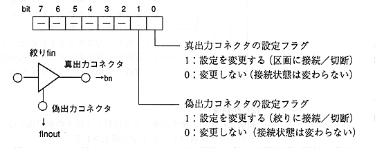

Title | Function | Function Name [SR] | No |
Format Sint32 CDC_SetFiltCon (Sint32 filtno, Sint32 cflag, Sint32 bufno, Sint32 flnout) Input filtno: Aperture number : cflag: Aperture connection flag (lower 8 bits are valid) : bufno: Buffer partition number to which the true output connector is connected (CDC_NUL_SEL: Disconnected) : flnout: Narrowing number for connecting the fake output connector (CDC_NUL_SEL: Disconnect) Output None Function value Returns an error code. End flag ESEL flag Functions Set the following connection destinations for the aperture. If CDC_NUL_SEL is specified, the connection is disconnected. , , true output connector → buffer partition input connector -False output connector-> Other aperture input connector

Title | Function | Function Name [S-] | No |
Format Sint32 CDC_GetFiltCon (Sint32 filtno, Sint32 * bufno, Sint32 * flnout) Input filtno: Aperture number Output bufno: Buffer partition number to which the true output connector is connected (CDC_NUL_SEL: Not connected) : flnout: Aperture number for connecting the fake output connector (CDC_NUL_SEL: Not connected) Function value Returns an error code. Function Gets the aperture connection destination. If not connected, CDC_NUL_SEL is returned.